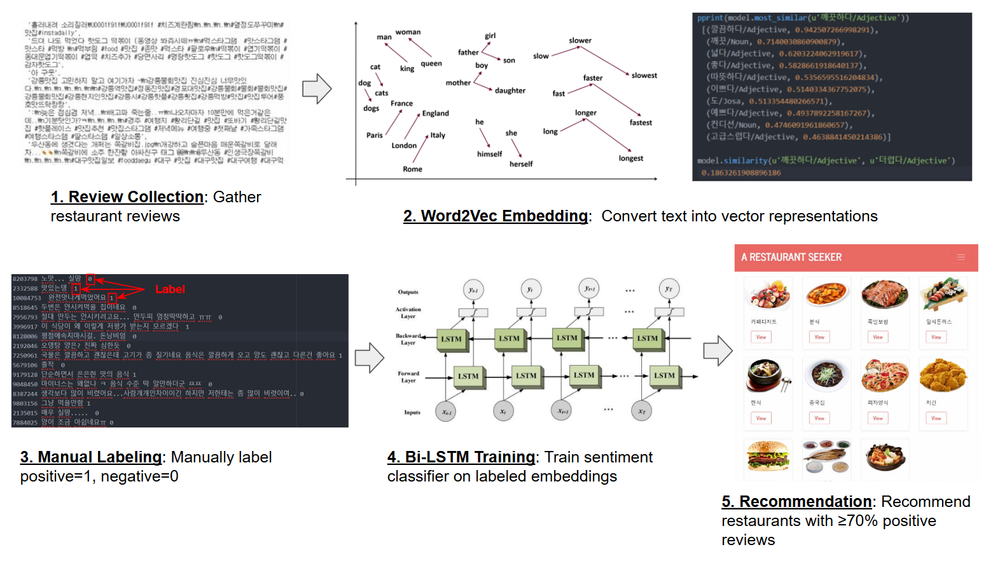

Project Overview
Developed a web service that recommends restaurants by analyzing the sentiment of user reviews. Moved beyond simple star ratings by leveraging Deep Learning to extract semantic sentiments from text data.
Achievements
End-to-End Data Pipeline: Built a web crawler to collect a large corpus of user reviews and preprocessed the text data for training.
NLP Modeling: Applied Word2Vec for word embedding and implemented a Bi-LSTM (Bidirectional LSTM) network to classify reviews into positive or negative sentiments with high accuracy.
Recommendation Logic: Designed a ranking algorithm that aggregates the sentiment inference results to calculate a "satisfaction score" for each restaurant.
Full-Stack Implementation: Deployed the model within a web application using Django and MySQL.